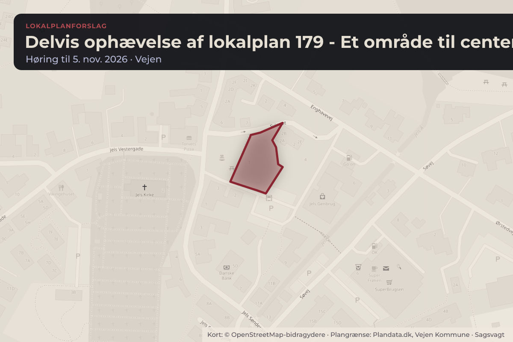
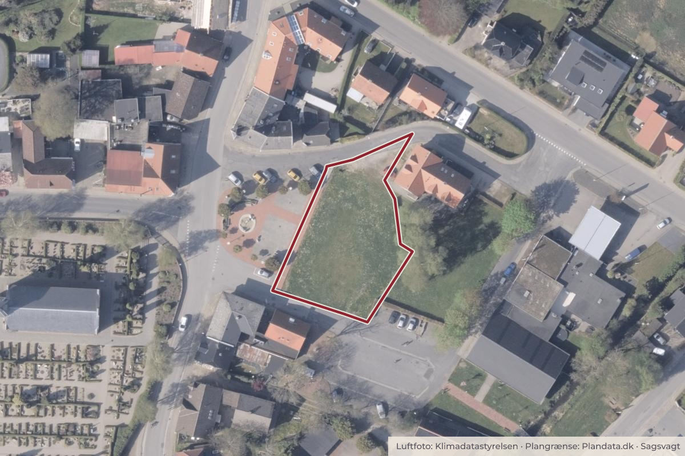

Besluttet 22. september, Udvalget for Klima, Miljø og Teknik, Vejen
Forslag til delvis ophævelse af Lokalplan 179 - Et område til centerformål ved Jels Torv (C)
Anbefales godkendt og sendt i høring. Fraværende: Nils Brøndumbo (O)

Kort: © OpenStreetMap-bidragydere. Plangrænse: Plandata.dk, Vejen Kommune.

Kort fortalt
- Hvem
- Udvalget for Klima, Miljø og Teknik, Vejen Kommune
- Hvornår
- Tirsdag 22. september 2026
- Status
- Besluttet. Anbefales godkendt og sendt i høring.
Hvad kan du gøre?
- Hold øje med høringen
- Forslaget lægger op til en offentlig høring. Når den åbner, kan alle sende et høringssvar på vejen.dk.
Læs hele sagen Kommunens egen tekst
Sagsfremstilling
Forslag til delvis ophævelse af Lokalplan 179 er udarbejdet, da bestemmelserne for delområde
1 er forældede. Lokalplanen udlægger området til centerformål, og bestemmelserne i
delområde 1 tager udgangspunkt i bevarelse af det tidligere Jels Hotel, som i dag er nedrevet.
Bestemmelserne har derfor ikke længere relevans.
Det område, der foreslås ophævet af lokalplanen, omfatter et areal på ca. 1.300 m 2 og består
af en del af matr.nr. 193, Jels Ejerlav, Jels.
Lokalplan 179 er vedtaget den 10. juni 2009, og blev lavet på baggrund af daværende
hotelejers ønske om at kunne muliggøre etageboligbebyggelse inden for en del af
lokalplanområdet, samt sikre en sammenhængende planlægning for området. Derudover
ønskedes det at sikre kulturmiljøet og den særlige arkitektur, som hotellet samt ejendommen
på Svinget 2 var præget af. Hotellet er i dag nedrevet og den eneste tilbageværende
bebyggelse inden for lokalplanområdet er Svinget 2, der anvendes til boligformål.
Delområde 1 ligger inden for Kommuneplanens rammebestemmelser for område 12.C.05 Bycenter syd for Svinget, der udlægger området til centerområde. Kommuneplanrammen for
området fastholdes.
Lokalplanområdet ligger i byzone og vil forblive byzone ved den delvise ophævelse. Efter
ophævelsen vil Lokalplan 179 ikke længere være gældende for det skraverede område vist på
kortbilag 1. I stedet reguleres der efter Kommuneplanramme 12.C.05 og de generelle
bestemmelser i bygningsreglementet.
For det resterende lokalplanområde sker der ikke ændringer i Lokalplan 179.
Miljøvurdering:
Planen er screenet i henhold til Miljøvurderingsloven. Planen vurderes ikke at være omfattet af
kravet om miljøvurdering, da virkeliggørelse ikke vil medføre en væsentlig indvirkning på
miljøet. Afgørelsen af miljøscreeningen kan påklages til Planklagenævnet inden 4 uger fra
offentliggørelse af planforslaget.
Forslag til delvis ophævelse af Lokalplan 179 kan ses som bilag til dagsordenspunktet.
Tidligere behandling
19.05.2026 Udvalget for Økonomi, Plan og Erhverv.
Økonomiske konsekvenser
Ingen.
Personalemæssige konsekvenser
Ingen.
Retsregler og andre forskrifter
LBK nr. 572 af 29.05.2024 Lov om planlægning.
LBK nr. 4 af 03.01.2023 om miljøvurdering af planer og programmer og af konkrete projekter
(VVM).
Høring
Planen skal i offentlig høring i 4 uger.
Beslutning
Anbefales godkendt og sendt i høring.
Fraværende: Nils Brøndumbo (O)
Kilde: Vejen Kommune, Udvalget for Klima, Miljø og Teknik, referat fra mødet tirsdag 22. september 2026, punkt 9. Læs den originale sag hos kommunen.